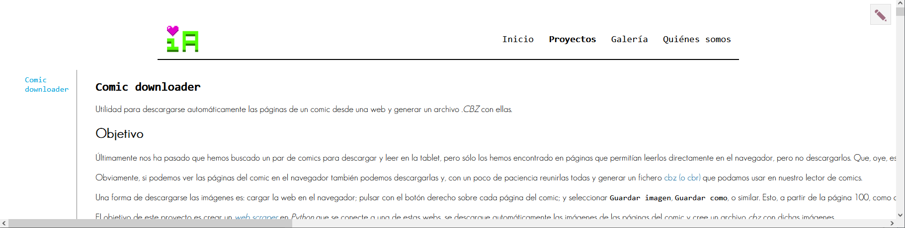
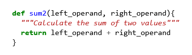
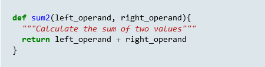

Queremos mostrar los bloques de código usando coloreado de sintaxis, ajustados al ancho de la columna principal de texto, y con una barra de desplazamiento horizontal para cuando una linea de código sea demasiado larga y no quepa en el espacio disponible en pantalla.
Estaba yo todo ufano pensando que ya tenía más o menos resuelta la maquetación de la web (por lo menos para escritorio) cuando termino el artículo sobre el scraper de comics y al previsualizar me encuentro con esto:

Hasta ahora, el texto se estaba ajustando correctamente a la anchura del bloque principal de la página, con sus saltos de línea automáticos, como en esta misma página vaya. Pero, de repente, en Comic Downloader cada párrafo se alarga en una sola línea sin respetar los anchos que tenemos definidos en nuestro CSS.
¿Qué tiene de especial esta página? Bueno, pues que es la primera en la que meto bloques de código. En estos bloques muestro fragmentos tanto del código HTML de la web que queremos inspeccionar como del script de Python que hace el scrapping. Y como se trata de fragmentos de código fuente, en general, no es buena idea incluir saltos de línea porque el código podría dejar de tener sentido (especialmente en Python), así que cuando se va a mostrar un fragmento de código, lo habitual es envolverlo dentro de un bloque <pre> para indicarle al navegador que debe respetar el formato del texto.
Todo esto está muy bien, hasta que te encuentras con alguna línea de código especialmente larga como estas:
Entonces al bloque <pre> no le queda más remedio que crecer a lo ancho hasta que quepa toda la línea. El bloque principal tiene que crecer a su vez para poder contener al <pre>. Y ahora el resto del texto se ajusta a la nueva anchura del bloque principal, que es mucho mayor que la que teníamos originalmente y todo se va de madre.
O sea, que no podemos meter saltos de línea en los extractos de código, pero tampoco podemos dejarles extenderse hasta el infinito. ¿Qué opción nos queda? Bueno, pues lo que se suele hacer en estos casos es poner una barra de desplazamiento horizontal en el bloque de código, de manera que si hay alguna línea que necesita más anchura de la disponible podemos usar la barra para verla, a la vez que se respeta la maquetación del resto de la página.
Y ya de paso que nos metemos con esto, vamos a implementar también resaltado de sintaxis que nunca disgusta.
Después de los cambios, el mismo extracto de código que teníamos en la imagen anterior se va a ver así:
... <div id='page_1' class='page-chapter'> <img class="lazy" alt='Blitz issue 1 - Page 1' data-index='1' src="data:image/png;base64,R0lGODlhAQABAAD/ACwAAAAAAQABAAACADs=" data-original='https://2.bp.blogspot.com/BAGbHzkIOOycG_XZ8zA2LrwgAAKfDDIm5sD_fL11HlSTROVfEoSnhDbHYrmY_GZ3VCw6Cy3ubiQuQ-umvAFoQ0Gsv8KSvKFZPMpoFI9Wc1ljT8klrQnH7Nm1pxhnld8_CRMSJBq6Cg=s0?rhlupa=MjYwNDphODgwOjQ6MWQwOjo1YTQ6NDAwMA&rnvuka=TW96aWxsYS81LjAgKFgxMTsgTGludXggeDg2XzY0KSBBcHBsZVdlYktpdC81MzcuMzYgKEtIVE1MLCBsaWtlIEdlY2tvKSBIZWFkbGVzc0Nocm9tZS8xMDYuMC41MjQ5LjkxIFNhZmFyaS81MzcuMzY=' /> </div> <div id='page_2' class='page-chapter'> <img class="lazy" alt='Blitz issue 1 - Page 2' data-index='2' src="data:image/png;base64,R0lGODlhAQABAAD/ACwAAAAAAQABAAACADs=" data-original='https://2.bp.blogspot.com/U6IBkSotsaNcv2mE_u8fUmJxAgFArDcwXwY9hn3LyK-QAH6NNN4tQe-R2F2ps_oWDvevZrICijeTBgHQ_ZqquEFAW7qaUFl14piAwZjYxLat-UXGSfy9oUYmqFv0r19DiKCGXpxlAQ=s0?rhlupa=MjYwNDphODgwOjQ6MWQwOjo1YTQ6NDAwMA&rnvuka=TW96aWxsYS81LjAgKFgxMTsgTGludXggeDg2XzY0KSBBcHBsZVdlYktpdC81MzcuMzYgKEtIVE1MLCBsaWtlIEdlY2tvKSBIZWFkbGVzc0Nocm9tZS8xMDYuMC41MjQ5LjkxIFNhZmFyaS81MzcuMzY=' /> </div> <div id='page_3' class='page-chapter'> <img class="lazy" alt='Blitz issue 1 - Page 3' data-index='3' src="data:image/png;base64,R0lGODlhAQABAAD/ACwAAAAAAQABAAACADs=" data-original='https://2.bp.blogspot.com/_PRXQJLKxw2U8La2ZvhPfDaG60xKvrv5tmjysnPQ_w7qDzZn2tq4cC0xQnBPCF65r6-Jn7QMyZJwn8nOLLIInxpe_gObKkUQCrKQ4SSKfINHXHgelbcsKw6w5q1aRXd1forL5HYJdA=s0?rhlupa=MjYwNDphODgwOjQ6MWQwOjo1YTQ6NDAwMA&rnvuka=TW96aWxsYS81LjAgKFgxMTsgTGludXggeDg2XzY0KSBBcHBsZVdlYktpdC81MzcuMzYgKEtIVE1MLCBsaWtlIEdlY2tvKSBIZWFkbGVzc0Nocm9tZS8xMDYuMC41MjQ5LjkxIFNhZmFyaS81MzcuMzY=' /> </div> ...
Vamos a empezar por aquí que es lo más sencillo. Queremos utilizar algún tipo de resaltado de sintaxis para que nuestros extractos de código sean más legibles. Por suerte existe un plugin de Lector que permite hacer esto de manera automática. Además lo hace simplemente creando una serie de clases CSS, sin necesidad de inyectar ningún tipo de script en las páginas generadas.
El plugin se llama "lektor-markdown-highlighter" y para instalarlo tenemos que ir al fichero de proyecto de Lektor (.lektorproject) y añadir su nombre y versión en el apartado [packages].:
[project] ... [packages] ... # La ultima version disponible actualmente es la 0.3.2 lektor-markdown-highlighter = 0.3.2
A continuación tenemos que hacer que las páginas donde vallan a mostrarse bloques de código carguen los ficheros CSS necesarios para el coloreado. En nuestro caso estas van a ser las páginas de proyectos. Además, el plugin nos aporta una función para simplificar este proceso: get_pygments_stylesheet(). Sabiendo esto abrimos la plantilla de las paginas de proyectos (project-page.html) e incluimos el link al fichero CSS al comienzo del bloque Body:
...
{% block body %}
<!-- Con "get_pygments_stylesheet()|url" conseguimos la URL del fichero CSS con las clases usadas en el resaltado de sintaxis -->
<link rel="stylesheet" href="{{ get_pygments_stylesheet()|url }}">
<div class="body-map-container">
...
</div>
{% endblock %}
Y con esto ya tenemos código de coloricos.
Cuando nosotros escribimos el contenido de un post lo hacemos en formato Markdown. Luego, antes de publicarlo, Lektor lo transforma en HTML y lo combina con la plantilla que corresponda para crear una nueva página. Así, para mostrar un bloque de código nosotros escribimos:
```python
def sum2(left_operand, right_operand){
"""Calculate the sum of two values"""
return left_operand + right_operand
}
```
Al generar la página Lektor lo transforma en:
<div class="hll">
<pre>
<span></span><span class="k">def</span> <span class="nf">sum2</span><span class="p">(</span><span class="n">left_operand</span><span class="p">,</span> <span class="n">right_operand</span><span class="p">){</span>
<span class="w"> </span><span class="sd">"""Calculate the sum of two values"""</span>
<span class="k">return</span> <span class="n">left_operand</span> <span class="o">+</span> <span class="n">right_operand</span>
<span class="p">}</span>
</pre>
</div>
Y nuestro navegador lo interpreta para mostrarnos esto:

De la versión HTML llama la atención que tenemos el texto envuelto en unas cuantas etiquetas <span> de distintas clases (como <span class="p"> o <span class="n">). Estas etiquetas las ha generado el plugin lektor-markdown-highlighter. Cada clase representa un tipo de elemento sintáctico. Por ejemplo, class="k" se aplica a keywords como def o return y class="nf" a nombres de función como sum2. El plugin genera, además, un fichero .css asignando distintos colores a cada una de estas clases. De esta manera se consigue el resaltado de sintaxis.
Por otro lado, todo el texto está envuelto en un bloque <pre> que indica al navegador que debe mostrarse preservando el formato original de tabulaciones y espacios en blanco, tal como se espera de un extracto de código fuente.
Y por último, tenemos una etiqueta <div class="hll"> envolviendo a todo el conjunto. Esta etiqueta originalmente no hace nada, pero todos los bloques de código que escribamos en Markdown va a acabar envueltos por un <div class="hll"> así que podemos usarlo para identificarlos y personalizar su apariencia mediante CSS.
Por ejemplo, podemos cambiar el color de fondo y el tamaño del texto para los bloques de código abriendo nuestro fichero .css y añadiendo:
div.hll{ background: rgb(220, 230, 235); font-size: 15px; line-height: 1.55; }
Con lo que ahora se verían así

Vale, pero yo aquí venía a poner una barra de desplazamiento porque había unas líneas muy largas y no-se-que-movidas.
Bueno, pues resulta que eso lo podemos hacer mediante CSS. La propiedad overflow-x (doc) sirve para indicar que queremos hacer en caso de que un elemento sea más ancho que su elemento padre (overflow-y hace lo propio con la altura). El valor por defecto es visible que el contenido puede "desbordarse" de manera visible más allá de los límites del contenedor.
A nosotros nos interesan los valores scroll o auto. Con el primero se muestra siempre una barra de desplazamiento horizontal en la parte inferior del contenedor. Con auto la barra aparece solo cuando es necesaria.
Al final, el elemento CSS nos queda:
div.hll{ background: rgb(220, 230, 235); font-size: 15px; line-height: 1.55; padding: 5px 20px; width: 100%; box-sizing: border-box; overflow-x: auto; }
Con width:100%; y box-sizing: border-box; indicamos que nuestro bloque de código debe tener el mismo ancho que la columna de texto que lo contiene y que incluimos el tamaño de sus bordes en el calculo. Y con overflow-x: auto; le decimos al navegador que si el contenido es más grande de lo que cabe en ese ancho añada una barra de desplazamiento para poder verlo todo.
Al final, los bloques de código nos quedan con esta pinta:
def sum2(left_operand, right_operand){ """Calculate the sum of two values""" return left_operand + right_operand }
def AVeryLongAndConvolutedVaguelyDescriptiveFunctionName(left_hand_operand_hopefully_a_number, right_hand_operand_hopefully_a_number){ """Calculate the sum of two values. There probably are better ways to do this, but this is our way.""" return left_hand_operand_hopefully_a_number + right_hand_operand_hopefully_a_number }
{kind=link}